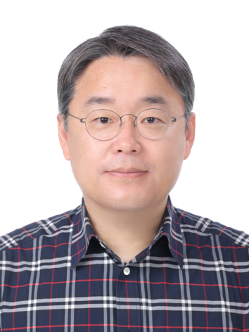

Members
- Professor
- Students
- Staffs
- Alumni
Professor
- All
- 주요 경력
- 학술 경력
- 연구 과제

장원석 교수/공학박사 Wonseuk Jang
Field of Specialty : Medical Engineering
Email : WS.JANG@yuhs.ac
Tel : 02-2019-5442
| Research Interest |Medical Device Usability EngineeringMedical Device UX/UI Design and EvaluationMedical Image Diagnostic SystemBio-Signal Processing and Diagnostic AlgorithmMedical Device Industry Policy
| 주요 경력 |
- 2018. 03. ~ 현재 : 연세대학교 의과대학 대학원 의료기기산업학과 교수
- 2020. 03. ~ 현재 : 연세대학교 의과대학 대학원 융합의학과(디지털헬스케어전공) 교수
- 2014. 09. ~ 2018. 02. : 연세대학교 의과대학 의학공학교실 연구조교수
- 2012. 12. ~ 2014. 08. : 연세대학교 보건과학대학 방사선학과 조교수
- 2012. 07. ~ 2012. 11. : 삼성메디슨㈜ 수석연구원
- 2004. 08. ~ 2011. 04. : 지멘스㈜ SIEMENS Medical R&D Center, 수석연구원
- 2002. 05. ~ 2004. 07. : 한국보건산업진흥원 의료기기팀, 연구원
- 1997. 07. ~ 2002. 05. : ㈜바이오시스 연구소 S/W팀 , 전임연구원
| 기타 사항 |
- 2024. 04. ~ 현재 : 보건복지부 자체평가위원회(의료제도분과), 보건복지부
- 2024. 01. ~ 현재 : 대한의용생체공학회 교육이사
- 2024. 01. ~ 현재 : 대한에프디씨규제과학회 학술위원
- 2022. 11. ~ 현재 : 디지털의료전문평가위원회, 보건복지부
- 2021. 09. ~ 현재 : 강남세브란스병원 의료기기사용적합성 연구센터 소장
- 2021. 07. ~ 현재 : 소비자정책위원회, 전문위원(식의약품분야), 국무총리실
- 2021. 07. ~ 현재 : 의료기기위원회, 전문위원, 식품의약품안전처
- 2021. 05. ~ 현재 : 보건산업 기술가치 평가 심의위원, 한국보건산업진흥원
- 2020. 11. ~ 현재 : R&D 샌드박스 운영위원회, 산업통상자원부
- 2020. 04. ~ 현재 : 의료기기 기술문서심사기관 심의위원회, 식품의약품안전처
- 2016. 03. ~ 현재 : 의료기기 이상사례 심위위원회, 식품의약품안전처
- 2013. 05. ~ 현재 : 의료기기위원회, 전문위원, 식품의약품안전처
- 2009. 09. ~ 현재 : 의료기기미래포럼-제도분과개선 전문위원회. 전문위원, 식품의약품안전처
- 2006. 05. ~ 현재 : 지식경제 기술혁신평가단(의료기기), 평가위원, 지식경제부
- 2021. 01. ~ 2021. 12. : 대한에프디씨규제과학회 학술위원
- 2021. 01. ~ 2021. 12. : 대한의용생체공학회 학술이사
- 2017. 07. ~ 2017. 10. : 산업계관점대학평가(의료기기분야) 요구분석, 전문위원, 대학교육협의회
- 2016. 06. ~ 2017. 05. : 의료기기광고사전심의위원회, 전문위원, 한국의료기기산업협회
- 2015. 10. ~ 2015. 12. : 산업핵심기술개발사업, 산업통상자원부
- 2013. 06. ~ 2013. 06. : 산업계관점대학평가(의료기기분야) 요구분석, 전문위원, 대학교육협의회
- 2009. 08. ~ 2012. 01. : 산업원천기술개발사업(의료기기) 기획지원팀, 지식경제부
- 2011. 07. ~ 2011. 12. : 범부처의료기기연구개발사업 공동기획위원, 전문위원, 지식경제부/보건복지부
- 2011. 06. ~ 2011. 12. : 산업원천기술개발사업(의료기기) R&D전략위원회, 지식경제부
- 2008. 08. ~ 2011. 12. : 산업원천기술로드맵(의료기기) 기획위원회, 지식경제부
- 2010. 10. ~ 2011. 04. : 대경 광역권선도산업육성 프로젝트, Advisor, 지식경제부
- 2008. 02. ~ 2009. 12. : 산업술로드맵(차세대의료기기) 기획위원회, 지식경제부
- 2008. 04. ~ 2009. 01. : 신성장동력기획단 바이오.의료소위원회, 전문위원, 지식경제부
- 2005. 04. ~ 2009. 02. : 산업원천기술개발사업 기획위원회, 지식경제부
- 2003. 04. ~ 2003. 12. : 의료기기법 연구회, 식품의약품안전처
| 학력 사항 |
- 2007 ~ 2010 : 연세대학교 대학원 생체공학협동과정 공학박사 * 학위 논문: Development of Portable Ultrasound Imaging System with Wireless Patient Monitor
- 1995 ~ 1997 : 연세대학교 대학원 의용전자공학과 공학석사
- 1991 ~ 1995 : 연세대학교 보건과학대학 의용전자공학과 공학사
| 수상 경력 |
- 2021 의료기기산업특성화대학원 유공자 포상 “한국보건산업진흥원 표창장”, 보건복지부, 2021.09.14
- 2010 대한민국기술대상 산업진흥유공분야“지식경제부장관상”, 지식경제부, 2010.12.09
| 학술 경력 |
- < 국외 논문 >
- User Experience Evaluation of Spinal Surgery Robot : Workload, Usability, and Satisfaction Study (JMIR Human Factors, Vol 11, 2024. 04. 01.)
- Automatic segmentation of inconstant fractured fragments for tibia/fibula from CT images using deep learning (Scientific Reports, Vol 13, No 1 2023. 11. 23.)
- Usability Study on Patient Monitoring Systems : An Evaluation of a User Interface Based on User Experience and Preference (Medical Science Monitor: International Medical Journal of Experimental and Clinical Research, Vol 29, 2022. 06. 04.)
- Real-Time Ultrasound Detection of Breast Microcalcifications Using Multifocus Twinkling Artifact Imaging (IEEE Transactions on Medical Imaging, Vol 41, No 5, 2022. 05. 02.)
- Feasibility study using multifocal Doppler twinkling artifacts to detect suspicious microcalcifications in ex vivo specimens of breast cancer on US (Scientific Reports, Vol 12, No 1, 2022. 02. 21.)
- (-)-Gallocatechin gallate from green tea rescues cognitive impairment through restoring hip SCIENTIFIC REPORTS (Scientific Reports, Vol 11, No 1, 2021. 01. 13.)
- 3D microcalcification detection using a color Doppler twinkling artifact with optimized transmit conditions : Preliminary results (Medical Physics, Vol 47, No 12, 2020. 06. 20.)
- Design and Implementation of a New Wireless Carotid Neckband Doppler System with Werable Ultrasound Sensors : Preliminary Results (Applied Sciences, Vol 9, No 11, 2019. 05. 29.)
- High PRF ultrafast sliding compound doppler imaging: fully qualitative and quantitative analysis of blood flow (Physics in Medicine & Biology, Vol 63, No 4, 2018. 02. 09.)
- Tooth Segmentation Using Gaussian Mixture Model and Genetic Algorithm (JOURNAL OF MEDICAL IMAGING AND HEALTH INFORMATICS, Vol 7, No 6, 2017. 10. 01.)
- Texture Analysis of Supraspinatus Ultrasound Image for Computer Aided Diagnostic System (Healthcare Informatics Research, Vol 22, no 4, 2016. 10. 31.)
- Continuous monitoring of arthritis in animal models using optical imaging modalities (JOURNAL OF BIOMEDICAL OPTICS, Vol 19, No 10, 2014. 10. 23.)
- Digital tomosynthesis (DTS) with a Circular X-ray tube: Its image reconstruction based on total-variation minimization and the image characteristics (JOURNAL OF THE KOREAN PHYSICAL SOCIETY, Vol 63, No 5, 2013. 09. 11.) < 국내 논문 >
- 사용적합성 평가를 적용한 국산 범용인공호흡기의 위험요인 분석(의공학회지 45권, 1호, 2024. 02.)
- 인공호흡기 중앙감시시스템 소프트웨어의 사용적합성 총괄평가(의공학회지 44권, 6호, 2023. 12. 31.)
- 선별적 적용을 통한 의료기기 공금내역보고 제도 개선 연구(의공학회지 44권, 5호, 2023. 10.)
- 인공호흡기 원격 통합 모니터링 및 제어 시스템 개발을 위한 소프트웨어 위험관리 및 사이버보안(의공학회지, 44권, 2호, 2023. 04. 30.)
- 미국 및 유럽 의료기기 품목분류 체계 분석을 통한 국내 의료기기 품목분류 개선 연구(의공학회지 44권, 1호, 2023. 02. 28.)
- 주요국의 의료기기 품목 분류체계 조사분석을 통한 국내 의료기기 품목 신설 및 세분화 연구(의공학회지 44권, 1호, 2023. 02. 28.)
- 국내 의료기기 제조업체의 ISO 13485 : 2016 교육 프로그램 개발 및 교육 효과 연구(한국품질경영학회 50권, 3호, 2022. 09. 30.)
- 다목적 안과용 레이저 시스템 안전성 성능평가 및 임상적 유효성평가 가이드라인 수립을 위한 연구 (의공학회지 40권, 6호, 2019. 12. 31.)
- 내시경용 마그네틱 마킹시스템 임상시험 표준 프로토콜 가이드라인 개발 연구 (FDC 법제연구, 14권, 1호, 2019. 06.)
- 폐 결절 검출을 위한 합성곱 신경망의 성능 개선 (의공학회지, 38권, 5호, 2017. 10. 31.)
- 이산 웨이브렛 변환을 이용한 고각성 부정 감성의 GSR 신호 분석 (감성과학, 20권, 3호, 2017. 09. 30.)
- 컴퓨터 보조진단을 위한 초음파 영상에서 갑상선 결절의 텍스쳐 분석 (멀티미디어학회논문지, 20권, 1호, 2017. 01. 30.)
- 깊이 카메라를 이용한 호흡률 측정에 미치는 영향 요인 분석 (감성과학, 19권, 3호, 2016. 09. 30.)
- 선형-비선형 특징추출에 의한 비정상 심전도 신호의 랜덤포레스트 기반 분류 (의공학회지, 37권, 2호, 2016. 04. 30.)
- 운동 의도에 따른 뇌파-근전도 신호 간 연결성 분석 (감성과학, 19권, 1호, 2016. 03. 31.)
- Distance Regularized Level Set Evolution 방법을 이용한 간암 Segmentation(대한의학영상정보학회지, 21권, 2015. 08.)
- Design of Optimized Ultrasound Clinical Work-flow; Usability Perspective (Journal of International Society for Simulation Surgery, 2권, 1호, 2015. 06. 10.)
- 심초음파용 생체신호측정모듈의 개발 (전자공학회논문지–SC, 47권, 4호, 2010. 07. 25.)
- 심초음파용 실시간 심전도 QRS 검출 모듈에 관한 연구 (전자공학회논문지–SC, 47권, 3호, 2010. 05. 25.)
- 대퇴근활성화에 대한 자전거 운동 시 근전도와 슬관절 각도와의 상관관계 연구 (전자공학회논문지–SC, 46권, 4호, 2009. 07. 25.)
| 학술대회 |
<국외 학술대회>| 저역서 |
| 지식재산권 |
| 보고서 |
| 연구 과제 |
<정부 과제>
- 기능 융합형 초음파 영상기기 (2020. 09. 01. ~ 2025. 12. 31. 범부처전주기의료기기연구개발사업단)
- 의료기기산업 주요 동향 조사 분석 (2024. 03. 18. ~ 2024. 12. 31. 한국산업기술진흥원)
- 실시간 비침습 패치형 초음파 혈역학 모니터링 시스템 개발 (2023. 04. 01. ~ 2024. 12. 31. 범부처전주기의료기기연구개발사업단)
- 인공지능 기반 중증악화 예측 가능한 고성능 환자감시장치 시스템 개발 (2020. 09. 01. ~ 2024. 12. 31. 범부처전주기의료기기연구개발사업단)
- 급만성 폐질환 치료를 위한 생체신호 분석기반 스마트 호흡치료기 개발 (2020. 09. 01. ~ 2024. 12. 31. 범부처전주기의료기기연구개발사업단)
- 신생아 집중치료에 적합한 다기능 스마트 보육기 개발 (2020. 09. 01. ~ 2024. 06. 30. 범부처전주기의료기기연구개발사업단)
- 의료기기 품목 분류체계 선진화 방안 마련 연구 (2023. 05. 26. ~ 2024. 01. 31. 식품의약품안전처)
- 디지털헬스케어 생태계 구축사업 (2021. 09. 01. ~ 2023. 12. 31. 한국산업기술진흥원)
- 병원 임상-비임상 자문 컨설팅 사업_AI기반 펄스형 방사선원 이용 치매 치료 저선량 방사선 시스템(2023. 07. 03. ~ 2023. 11. 05. 한국보건산업진흥원)
- 의료공공복지구현 및 사회문제해결분야 맞춤형 의료기기 평가기술 개발(4세부) (2021. 03. 01. ~ 2023. 02. 28. 범부처전주기의료기기연구개발사업단)
- 혁신의료기기 혁신가치보상 시범사업 모델개발 연구 (2022. 10. 06. ~ 2022. 11. 30. 한국보건산업진흥원)
- 신기술 의료기기 안전규제 관리기준 마련 연구 (2022. 03. 21. ~ 2022. 11. 16. 식품의약품안전처)
- 초음파 기반의 패치형 방광 모니터링 헬스케어 시스템 성능 개선을 위한 임상평가기술 개발 (2017. 04. 01. ~ 2022. 03. 31. 한국연구재단)
- 디지털 치료기기 임상설계 가이드라인 개발 연구 (2021. 05. 20. ~ 2021. 10. 29. 한국보건산업진흥원)
- 디지털 헬스케어 확산을 위한 오픈 이노베이션 생태계 구축사업 (2019. 09. 01. ~ 2021. 08. 31. 한국산업기술진흥원)
- 고령자 만성질환, 현장형 진단 및 치료 시스템 임상시험 지원 (2020. 09. 01. ~ 2021. 02. 28. 범부처전주기의료기기연구개발사업단)
- 병원-기업 연계 의료기기 R&D 협력 플랫폼 기획연구 (2020. 11. 09. ~ 2021. 01. 08. 한국산업기술평가관리원)
- 조산 고위험 산모 예측 알고리즘 개발 및 자궁 근전도 무선 모니터링 시스템의 임상적 유효성 검증 (2018. 04. 30. ~ 2021. 12. 31. 한국보건산업진흥원)
- 첨단기술 기반 치료형기기 평가기술 개발 (2017. 02. 01. ~ 2018. 11. 30. 식품의약품안전평가원)
- 현장진단-응급현장 시장 선도를 위한 ICT 기반 무선 초음파 솔루션 개발 (2014. 06. 01. ~ 2018. 05. 31. 한국산업기술평가관리원)
- 전후두부 정보흐름을 이용한 마취심도 및 통증수준 진단 시스템 개발 (2015. 11. 01. ~ 2017. 10. 31. 한국산업기술평가관리원)
- 급/만성 뇌질환/심혈관질환자 모니터링용 인체친화형 스마트 패치 및 재택 건강관리 서비스 솔루션 개발 (2015. 06. 01. ~ 2016. 05. 31. 한국산업기술평가관리원)
<민간 과제>
- 척추수술용 네비게이션의료용입체정위기(CS200)에 대한 사용적합성 평가 (2023. 01. 01. ~ 2024. 03. 31. (주)큐렉소)
- 정형용교정장치 사용적합성 엔지니어링 파일 설계 및 사용적합성 평가 수행 (2023. 06. 08. ~ 2024. 01. 31. (주)아이러브)
- 혈압계 임상평가 자문 (2023. 07. 01. ~ 2023. 12. 31. (주)참케어)
- 아이콜리에 대한 RA/QA 지원 용역 (2021. 12. 01. ~ 2022. 11. 30. (주)엣지케어)
- 위암영상검출진단보조소프트웨어에 대한 임상평가계획서 개발 (2020. 12. 01. ~ 2021. 08. 31. (주)웨이센)
- 하안검 치료용 정밀 초음파 수술기에 대한 사용적합성 평가 (2020. 03. 01. ~ 2020. 09. 30. (주)뉴퐁)
- 산업자문: 보건산업진흥원 미래융합의료기기개발 연구계획서 작성 자문(컨설팅) (2017. 12. 18. ~ 2017. 12. 31. 특허법인 다나)